DemoTwo-minute walkthrough
Abstract
Cysteine reactivity underlies diverse protein functions and covalent druggability, and can now be measured at proteome scale by chemical proteomics. Despite this progress, comprehensive discovery of functional cysteines remains challenging: mass spectrometry captures only a fraction of sites, and predictive models trained on limited observations generalize poorly to low-homology proteins or unseen species. To overcome this bottleneck, we introduce CysForcing, a multimodal learning framework that leverages both sequence and structure to extrapolate sparse omics data into proteome-wide predictions. By embedding experimental ratio signals as a learning prior, CysForcing organizes the representation space by reactivity-relevant similarity rather than incidental sequence patterns, improving out-of-distribution robustness and cross-species transfer. Across homology-controlled out-of-distribution splits, CysForcing consistently outperforms strong sequence-only and structure-only foundation baselines, with the largest gains in the lowest-similarity regimes, and transfers zero-shot to entirely unseen eukaryotic and prokaryotic proteomes. These results suggest that integrating experimental priors with multimodal representation learning enables scalable and generalizable mapping of cysteine reactivity.
MethodAt a glance
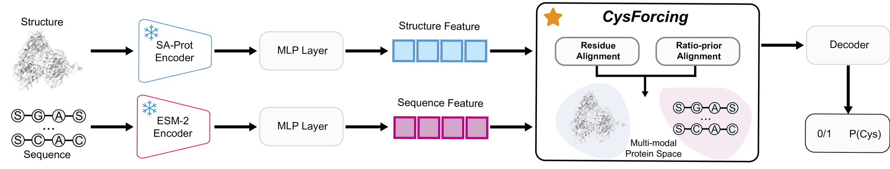
Two frozen encoders
SaProt reads the AlphaFold2 structure and ESM-2 the sequence; two small adapters map both views into one space.
Residue alignment
A cross-modal contrastive loss pulls the two views of the same cysteine together and pushes other sites apart.
Ratio-prior alignment
Measured competition ratios order the shared space, so that sites of similar reactivity sit close together.
ResultsBenchmark against foundation models
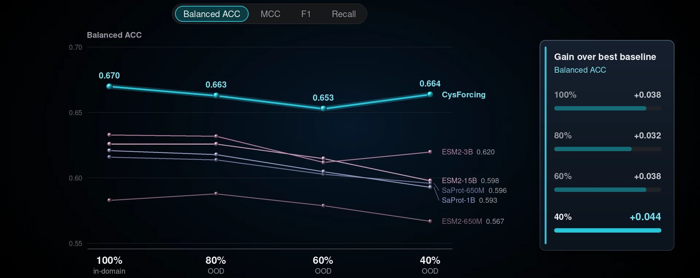
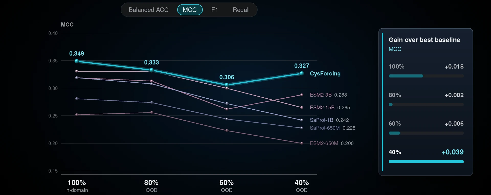
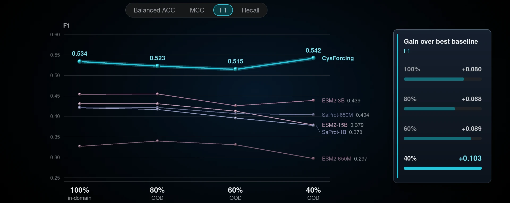
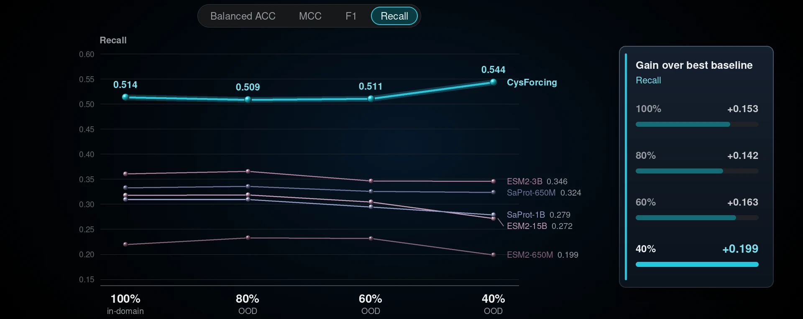
Five protein foundation models at four sequence-similarity cutoffs: the largest gains are in F1 and recall, and they are widest at 40% similarity.
ResultsAblation at 40% similarity
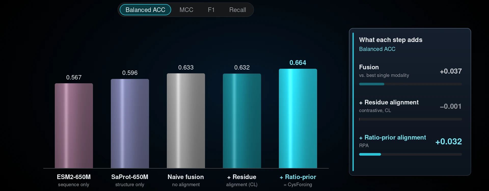
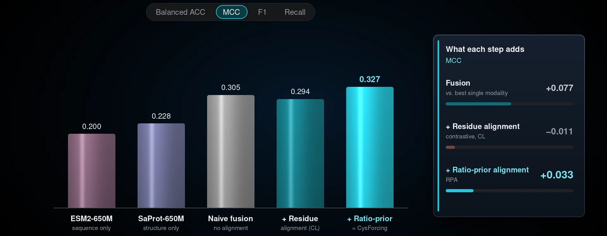
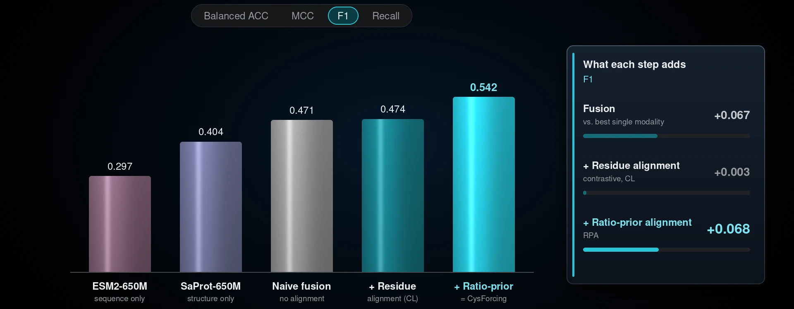
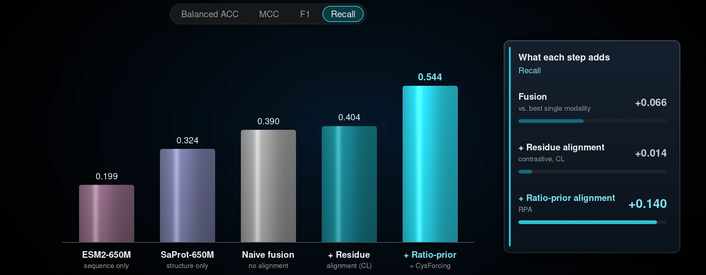
Fusing sequence and structure already beats either one alone; ratio-prior alignment adds +0.07 F1 and +0.14 recall, the largest single step.
ResultsRepresentation space
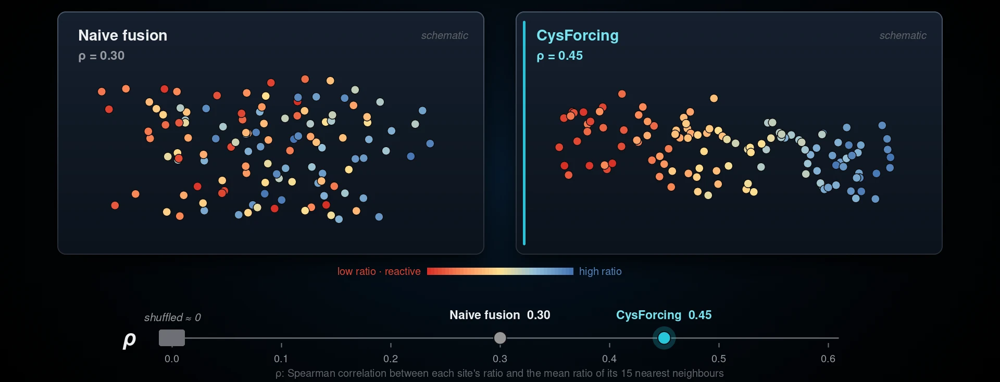
Neighbouring sites share similar measured ratios: the ratio-ordering score ρ rises from 0.30 with naive fusion to 0.45 with CysForcing, while shuffled ratios give ρ ≈ 0.
GeneralizationZero-shot against released predictors
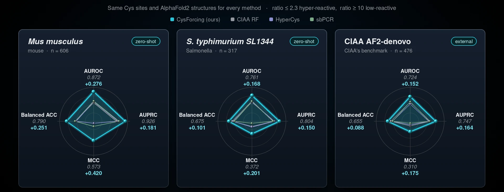
On mouse, Salmonella SL1344 and CIAA's AlphaFold2 benchmark, CysForcing leads every metric on every set, by +0.15 to +0.28 AUROC over the best released predictor.
GeneralizationWhere homology cannot help
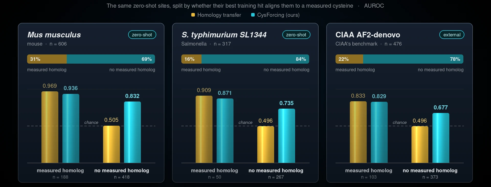
Homology transfer copies the ratio of an aligned, measured training cysteine; for the 69–84% of sites without one it falls to chance, while CysForcing keeps AUROC 0.68–0.83.
Summary
Recall vs. best baseline
at 40% sequence similarity
Recall vs. ESM2-15B
1.3B vs. 15B parameters, 40% similarity
Zero-shot AUROC lead
over released predictors, on mouse
No measured homolog
mouse AUROC; homology transfer 0.51
Code & data
git clone https://github.com/Hong-yu-Zhang/CysForcing.git && cd CysForcing
python simple_inference.py --model configs/model/CysForcing.yaml --weight weights/CysForcing.pth \
--pdb_folder /path/to/pdbs --out_dir result_inference/mineCitation
@article{zhang2026cysforcing,
title = {Ratio-prior Multimodal Alignment for Generalizable Cysteine Reactivity Prediction},
author = {Zhang, Hongyu and Zhang, Feng and Wang, Fengzhang and Liu, Zihua and Guo, Yudi and
Nie, Zhiwei and Wang, Chu and Chen, Jie and Liu, Yuan},
journal = {Under review},
year = {2026}
}